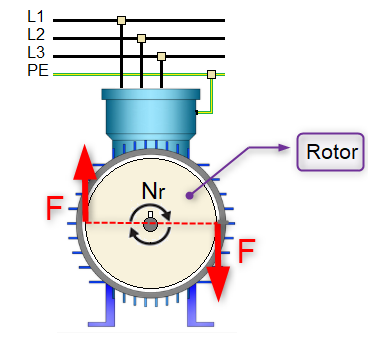
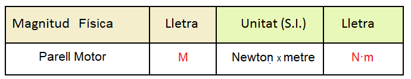
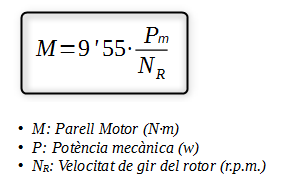
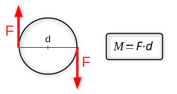
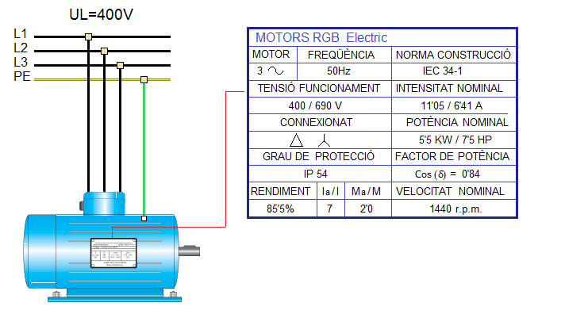

Parell Motor
La Dinàmica és una branca de la Física que estudia el moviment i les causes. Un dels postulats fonamentals d'aquesta ciència diu que les forces produeixen translacions i els Parells de Forces produeixen girs. Per tant, el gir del rotor ha d'estar originat per un parell de forces d'origen electromagnètic:

S'anomena Parell Motor (M) al parell de forces que dona lloc al moviment de rotació del rotor.
Unitats:

La magnitud física Parell Motor que es representa per la lletra M, té com unitat en el Sistema Internacional el Newton x metre que es representa mitjançant les lletres N·m
Càlcul del Parell Motor
La dada Parell Motor no apareix com a tal en la placa de característiques del motor, però es pot calcular a partir d'altres valors que sí ho fan: la potència mecànica o nominal(Pm) i la velocitat de rotació del rotor (Nr):

Amb aquesta dada i el diàmetre del rotor podríem calcular el valor de la força (F) d'origen electromagnètic provoca el gir del rotor:

Recordem que Parell Motor (M) i Potència Mecànica (Pm) són dos conceptes diferents, ja que el parell motor (M) fa referència al valor de la força (F) que origina el gir del rotor i en canvi la potència mecànica (Pm) fa referència a la capacitat del motor per lliurar aquesta força en el menor temps possible.
Activitat
Calcula el parell motor del següent motor:

Licencia: licencia de software libre GPL